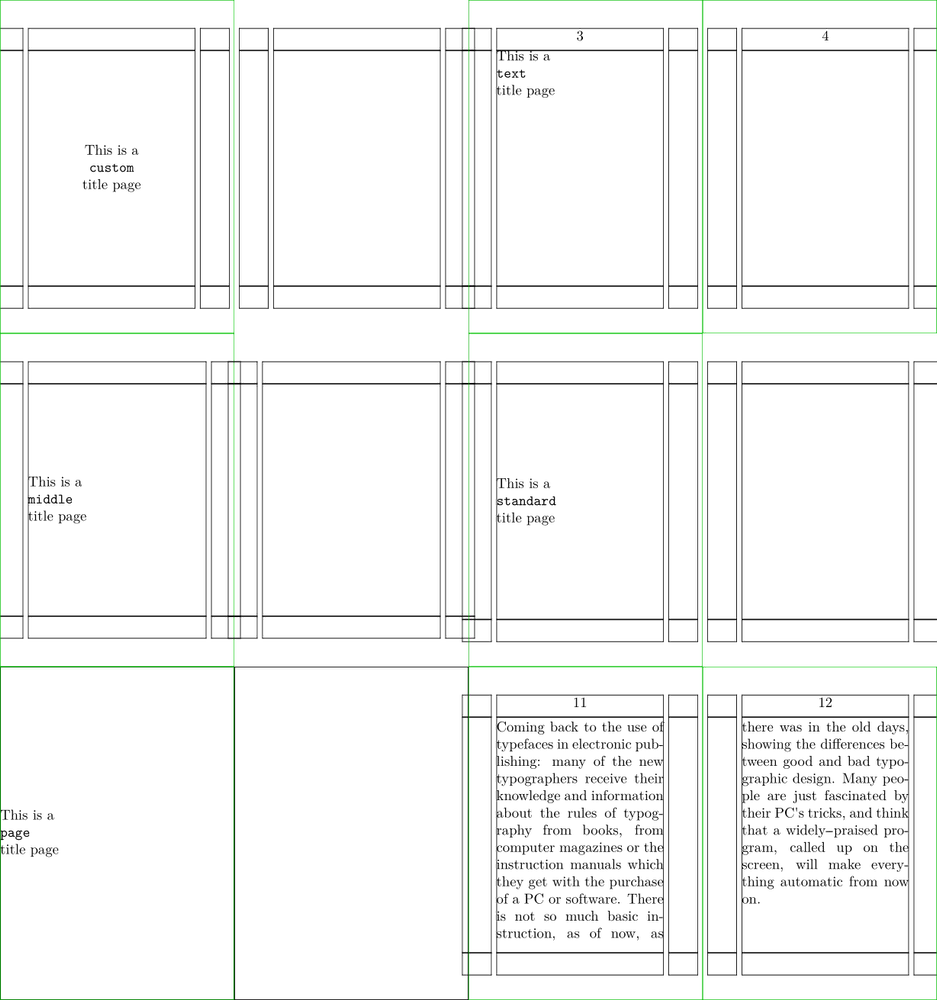
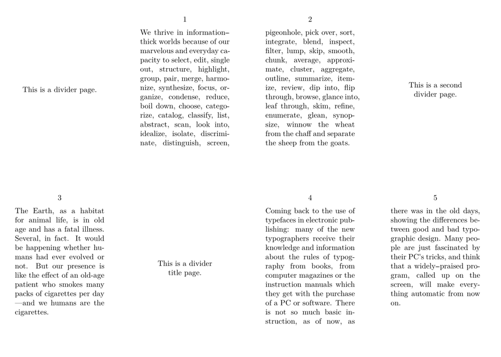
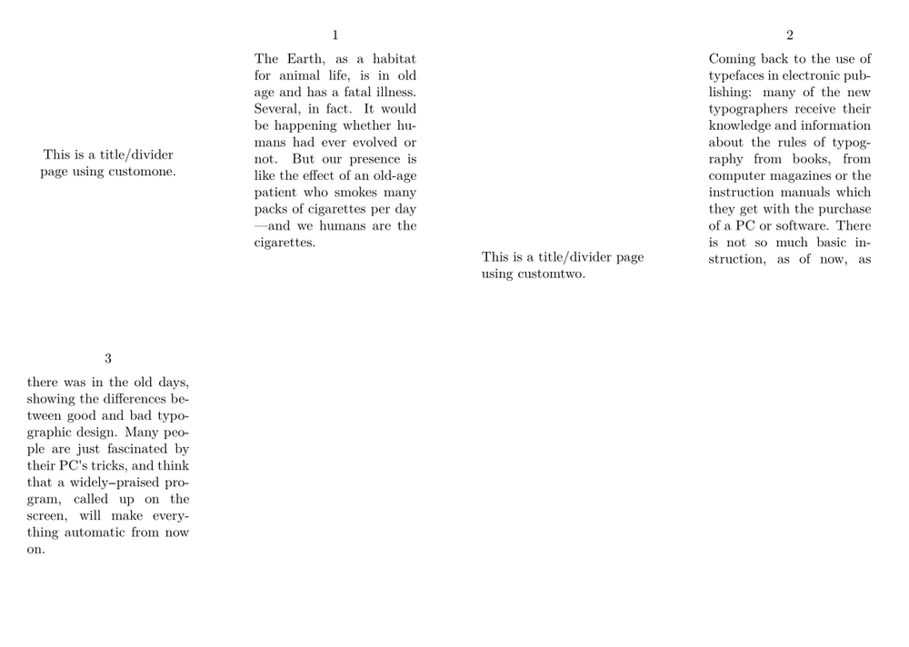
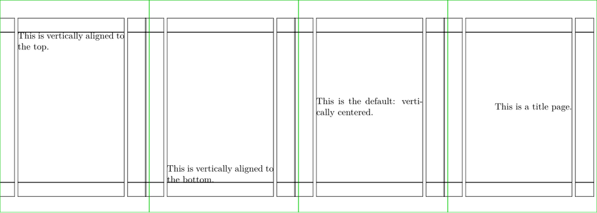
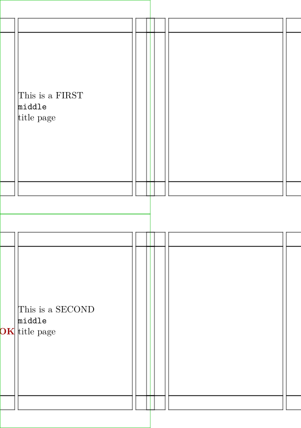

Contents
Description
A makeup is a single page with a special layout, allowing for custom and temporary header and footer sections.
Makeups don’t rely on the current page layout style, and they typically include covers, colophons or similar ones.
In any case, it is important not to forget that makeup contents will never split in pages. All makeup contents must fit on a single page.
There are predefined makeups: standard, page, text and middle. Of course, you can define as many as you may need.
By default, makeups have the following properties:
-
They aren’t numbered in the final document (
pagestate=startchanges this). -
In double-sided documents, they are always on an odd page (right page) with the next page empty (
page=yesanddoublesided=nochange each of these defaults). -
They don’t include header or footers (use either
headerstate=startorfooterstate=startto change it). -
They are left aligned (use the
alignoption key [and \dontleavehmode with \externalfigure ]).
All makeups have an associated layout. So you may use \setuplayout to tweak it (besides configuring the makeup itself).
Examples
There are a few ways to invoke a custom makeup (and to compare it with the other predefined makeups):
-
\definepapersize[sheet][width=208mm,height=222mm] \setuppapersize[A8][sheet] \setuppaper[nx=4,ny=3] \setuparranging[XY] \setupbodyfont[9pt] \setupalign[tolerant] \showframe \setuppagenumbering[alternative=doublesided, page=,] \setupmakeup[pagestate=start] \definemakeup[custom][align=middle] \starttext \startmakeup[custom] This is a \par \mono{custom}\par title page \stopmakeup \startmakeup[text] This is a \par \mono{text}\par title page \stopmakeup \startmakeup[middle] This is a \par \mono{middle}\par title page \stopmakeup \startmakeup[standard] This is a \par \mono{standard}\par title page \stopmakeup \startmakeup[page] This is a \par \mono{page}\par title page \stopmakeup \input zapf \stoptext
- 
As divider (title) pages
This may be easily extended to having multiple divider (title) pages:
-
\definepapersize[sheet][width=208mm,height=148mm] \setuppapersize[A8][sheet] \setuppaper[nx=4,ny=2] \setuparranging[XY] \setupbodyfont[9pt] \setupalign[tolerant] \definemakeup[custom][align=middle] \starttext \startmakeup[custom] This is a divider page. \stopmakeup \input tufte \startmakeup[custom] This is a second divider page. \stopmakeup \input ward \startmakeup[custom] This is a divider title page. \stopmakeup \input zapf \stoptext
- 
Another way to start a previously defined makeup is to put it into the \start invocation, i.e., \start<name>makeup. In the above case we can simply refer to the custom makeup with \startcustommakeup:
\definemakeup[custom][align=middle] \starttext \startcustommakeup This is a title page. \stopcustommakeup \input zapf \stoptext
And then extend to others:
-
\definepapersize[sheet][width=208mm,height=148mm] \setuppapersize[A8][sheet] \setuppaper[nx=4,ny=2] \setuparranging[XY] \setupbodyfont[9pt] \setupalign[tolerant] \definemakeup[customone][align=middle] % See note below on Vertical Alignment \definemakeup[customtwo][bottom=,] \starttext \startcustomonemakeup This is a title/divider page using customone. \stopcustomonemakeup \input ward \startcustomtwomakeup This is a title/divider page using customtwo. \stopcustomtwomakeup \input zapf \stoptext
- 
By default, makeups lack both header and footers. They are vertically centered and horizontally aligned to the left..
Horizontal and vertical aligment
Makeups are centered vertically by default.
The way to align them vertically to the top or to the bottom is the following:
-
\definepapersize[sheet][width=208mm,height=74mm] \setuppapersize[A8][sheet] \setuppaper[nx=4,ny=1] \setuparranging[XY] \setupbodyfont[9pt] \setupalign[tolerant] \showframe \starttext \startstandardmakeup[top=,] This is vertically aligned to the top. \stopstandardmakeup \startstandardmakeup[bottom=,] This is vertically aligned to the bottom. \stopstandardmakeup \startstandardmakeup This is the default: vertically centered. \stopstandardmakeup \definemakeup[custom][align=flushright] % align here is used to set text flush to the right \startcustommakeup This is a title page. \stopcustommakeup \stoptext
- 
Text in margin
You have to add [scope=local] for \inmargin like commands:
-
\definepapersize[sheet][width=104mm,height=148mm] \setuppapersize[A8][sheet] \setuppaper[nx=2,ny=2] \setuparranging[XY] \setupbodyfont[9pt] \setupalign[tolerant] \showframe \setuppagenumbering[alternative=doublesided, page=,] \setupmakeup[pagestate=start] \definemakeup[custom][align=middle] \starttext \startmakeup[middle] This is a FIRST \par \mono{middle}\par title page\inmargin{\color[darkcyan]{KO}} \stopmakeup \startmakeup[middle] This is a SECOND \par \mono{middle}\par title page\inmargin[scope=local]{\color[darkred]{OK}} \stopmakeup \stoptext
- 